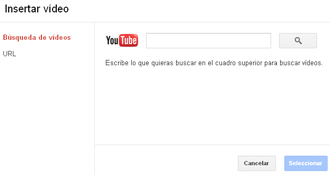

Aparecerá una ventana de carga de vídeos, donde podremos buscar escribiendo una palabra clave el vídeo que deseemos.
Una vez encontrado, lo marcaremos y pincharemos sobre Seleccionar. Éste se incorporará automáticamente a la presentación.
